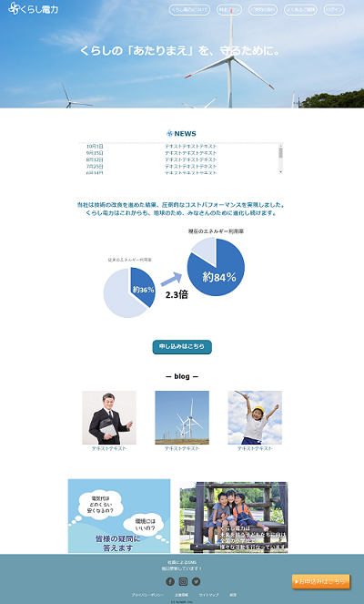

架空の電力会社サイト
制作時期：2019年11月 制作期間:約2日間
ターゲット
契約を検討しているユーザー
こだわり
・ユーザーが申し込みボタンの場所で迷わないよう、ボタンは画面に固定
・ボタンには全体の補色に近い色を用いることでアイキャッチの効果をねらったものに
・企業の清潔なイメージを与えられるよう、青を基調としすっきりとした画面に
・「スクロールに応じて要素がフェードインする」といった、真面目さを損なわない程度の適度な工夫
制作範囲
イラスト、デザイン、コーディング
使用ツール：HTML,CSS,JavaScript,JQuery,Photoshop,ibisPaint X
実際のページはこちら